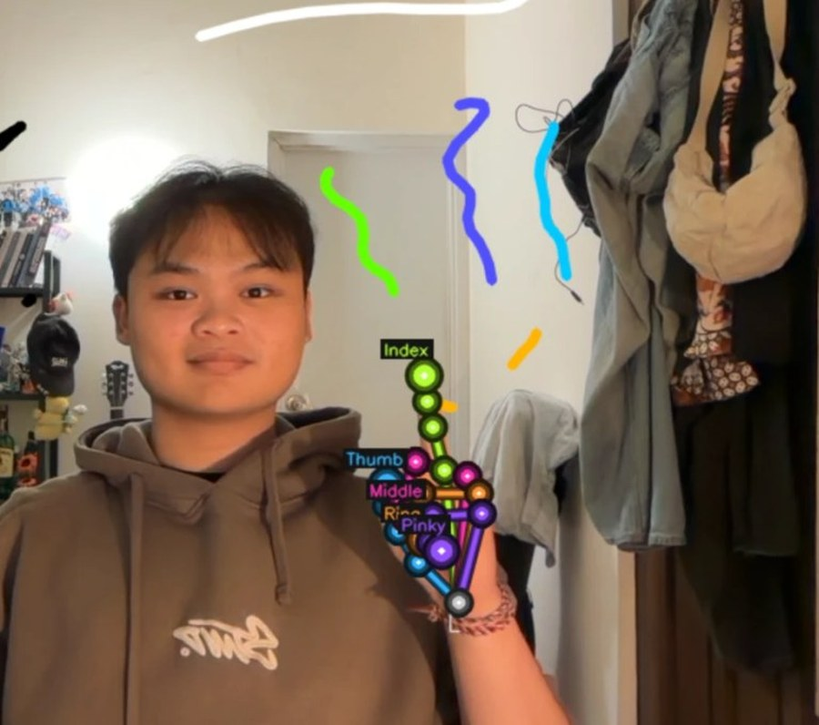
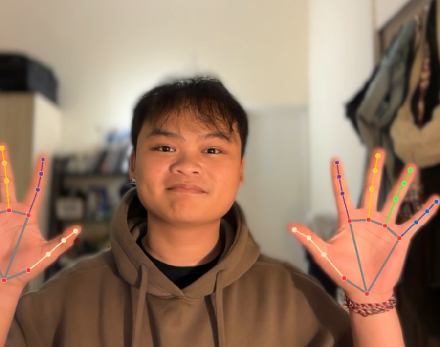
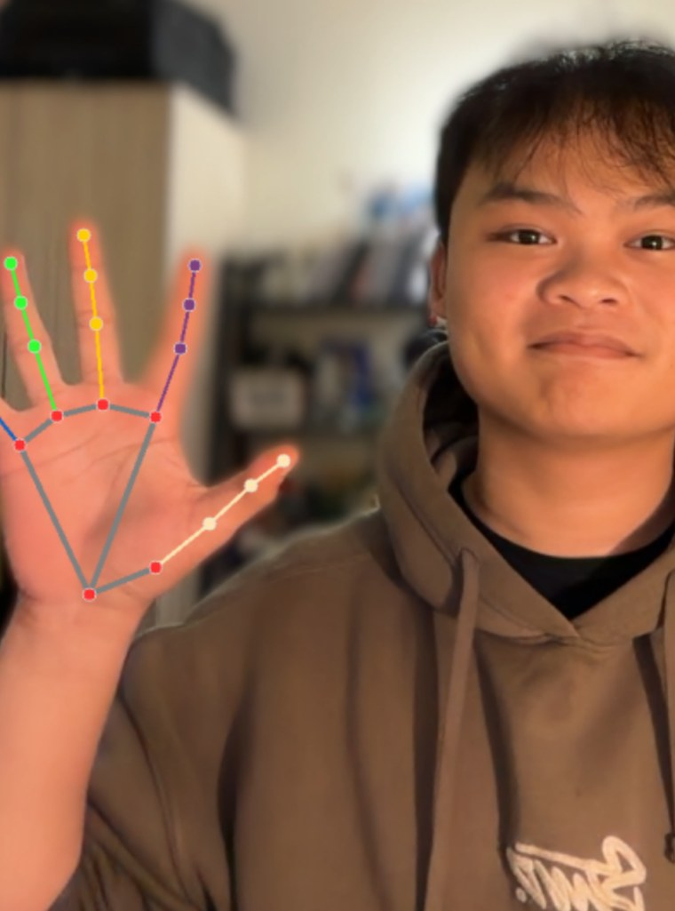
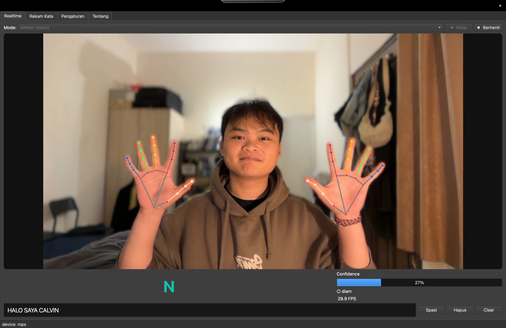
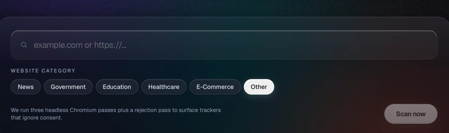
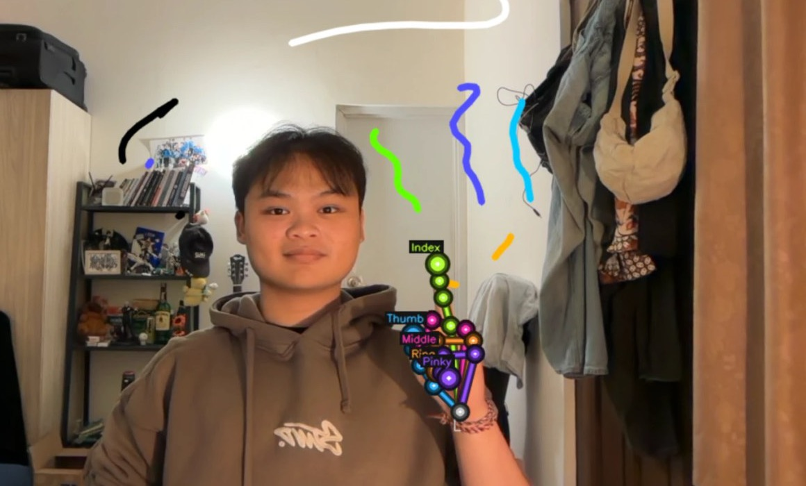

Computer science student.
I build trusted software.
Ida Bagus Gede Calvin Suta Subagia Manuaba, at Bina Nusantara University in Jakarta. I work on privacy and security, and on the interfaces that make both feel like nothing at all.
- Cookies set
- not checked
- Trackers
- not checked
- Third-party requests
- not checked
- Data kept on your device
- not checked
Measured in your browser when you press the button. Nothing is sent anywhere.


Three things I made. Hands, in two of them, are the interface.
What I work on
I like finding out how a thing really behaves, then building the calm version of it.
Most of my work starts by taking something apart. A mobile app that keeps a diary in plain text. A website that drops twenty trackers before you agree to anything. Once I can see what is actually happening, the fix is usually a design decision, not a clever trick.
So I build on both sides. I have written a translator that never sends your camera anywhere, a tool that scores how much a website is watching you, and a whiteboard you draw on with your hands.
I am early in this. I am not finished learning any of it, and that is the part I like.

Selected work
-

-

-

The record
How I got here
Also part of
Experience
Education
Recognition
What I use
How I think
Calvin
Computer science, Bina Nusantara University
Studying how systems fail taught me something I did not expect. Trust is not a feature you ship. It is the sum of every small promise you keep, and people only notice it when one of them breaks.
That changed what I pay attention to. A four pixel misalignment crashes nothing, but the person using it feels something is careless, even if they cannot name it.
The last thing took longer to learn. I have never once felt ready to start. I have learned to start anyway, because clarity comes from building, not from waiting for it. The first version is always a little wrong, and that is exactly what it is for.
Details are where respect for the people using your work becomes visible.
Building something?
Tell me about it.
This opens your own mail app with the line filled in. Nothing is sent from this page.